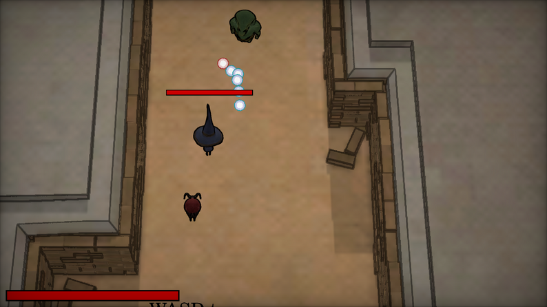

About This Game
Created for the GMTK Game Jam 2023 (Theme: Role Reversal)
Game Overview
You are a goat sidekick to a wizard, but your master is not very good at their job.
In this game the companion becomes the leader as you gently help the main character succeed in their quest to defeat the monster villain.
You cannot attack but you have to help your wizard by collecting items, healing the wizard, and guiding the wizard towards your direction.
Features
